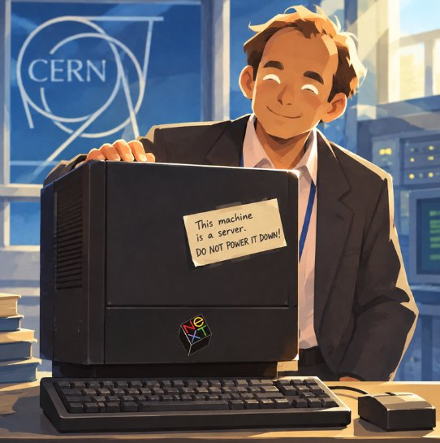
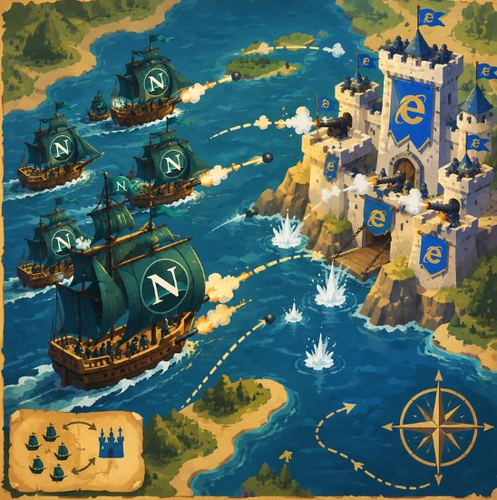
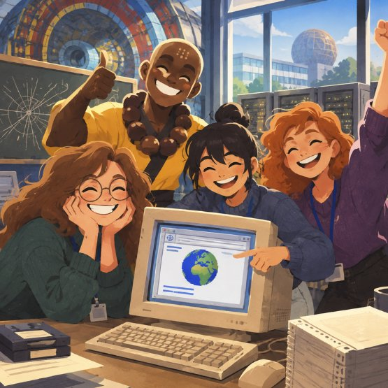

La Structure... Le Style... La Réactivité...
Au cœur de l'ère numérique, les anciens sanctuaires du Web avaient sombré dans l'oubli...
Donne un nom à ton fichier avec son extension (ex: index.html ou style.css) :
Au cœur de l'ère numérique, les anciens sanctuaires du Web avaient sombré dans l'oubli...

1990 — CERN, Genève« Cette machine est un serveur. Ne l'éteignez surtout pas ! »
Dans un laboratoire souterrain du CERN, Tim Berners-Lee conçoit le premier serveur web de l'histoire sur une station NeXT Cube noire. Pour éviter qu'un collègue ou le personnel d'entretien ne débranche la prise par inadvertance, il colle ce fameux morceau de papier adhésif. C'est ici que sont nés le protocole HTTP, les URL et la toute première spécification de HTML. Si cette machine s'était éteinte, le Web aurait pu ne jamais voir le jour.

1995-2001 — La Grande BatailleL'affrontement maritime pour la suprématie des portes du Web.
Entre l'armada agile de Netscape Navigator et la forteresse massive d'Internet Explorer, la bataille fit rage pendant une décennie. Chacun inventait ses balises propriétaires pour capturer les utilisateurs, forçant les développeurs à coder des sites en double exemplaire. C'est de cette guerre sanglante qu'est née la nécessité vitale des standards ouverts du W3C et du WHATWG que nous honorons aujourd'hui dans ce Sanctuaire.

1991 — L'Aube du RéseauLe jour où les écrans cathodiques se sont illuminés pour la première fois.
Rassemblés autour d'un moniteur lourd et bourdonnant, Bodhi et les premiers étudiants en informatique voient la première page web s'afficher. Une simple ligne bleue cliquable relie deux documents situés à l'autre bout du continent. Les sourires explosent : l'humanité venait de créer un espace de liberté, sans frontière, où le savoir circule librement. C'est cette promesse originelle que tu perpétues en apprenant chaque balise.